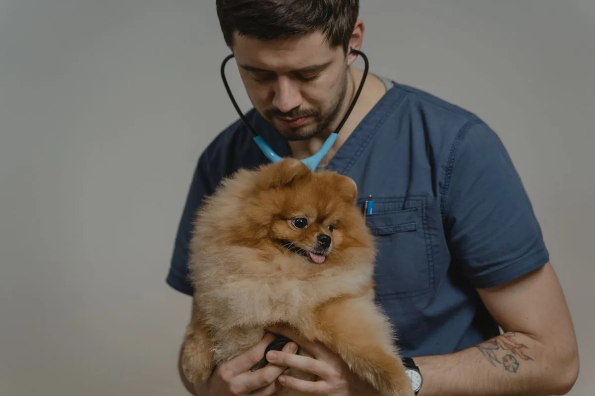

Dấu hiệu chó mèo khỏe mạnh và khi nào nên đưa đi bác sĩ thú y
Tác giả: Ruler
Thông tin chỉ mang tính tham khảo chung, không thay thế tư vấn của bác sĩ thú y. Bài viết này không chẩn đoán bệnh và không kê đơn thuốc. Bài viết giúp bạn quan sát chó mèo hằng ngày theo một khung rõ ràng, ghi chú lại thay đổi, và quyết định khi nào nên gọi cho bác sĩ thú y. Chẩn đoán chính xác và cách điều trị chỉ có thể có sau khi bác sĩ thú y trực tiếp khám con vật của bạn.
Chó mèo rất giỏi giấu cơn đau và sự khó chịu. Nhiều người mới nuôi chỉ nhận ra pet có vấn đề khi pet đã mệt rõ rệt, bỏ ăn nhiều ngày hoặc không đi lại được. Lúc đó, việc điều trị thường khó hơn và tốn kém hơn so với khi thay đổi mới bắt đầu. May mắn là bạn không cần kiến thức thú y chuyên sâu để phát hiện sớm. Bạn chỉ cần biết pet nhà mình "bình thường" trông như thế nào, và để ý khi có gì khác với bình thường đó.
Bài viết này không liệt kê tên bệnh. Nó đưa ra một khung quan sát gồm năm nhóm — ăn uống, đi vệ sinh, vận động, lông da và hành vi — kèm một bảng quyết định ba mức: ghi chú và theo dõi, gọi bác sĩ thú y trong ngày, và đi khám ngay. Lịch tiêm phòng và tẩy giun đầy đủ được viết ở lịch tiêm phòng và tẩy giun cho chó mèo con; bài này chỉ nhắc lịch khám định kỳ ở mức tổng quát và dẫn link sang bài đó, không lặp lại bảng lịch. Cách tắm và chải lông đầy đủ được viết ở tắm, chải lông và vệ sinh tai, móng cho chó mèo tại nhà; bài này chỉ nhắc việc quan sát lông da trong lúc chải lông.
Biết "bình thường" của pet nhà bạn là gì
Mỗi con chó, con mèo có một mức "bình thường" riêng. Có con ăn nhanh, có con ăn chậm. Có con ngủ nhiều ban ngày, có con hay chạy nhảy vào buổi tối. Có con đi vệ sinh hai lần một ngày, có con đi ba lần. Bạn không thể biết pet có thay đổi hay không nếu bạn không biết bình thường của nó là gì.
Trong hai tuần đầu sau khi đón pet về, hãy ghi chú ngắn mỗi ngày: pet ăn bao nhiêu bữa, ăn hết hay bỏ thừa, uống nước nhiều hay ít, đi vệ sinh mấy lần, phân và nước tiểu trông thế nào theo cảm nhận chung của bạn, pet ngủ bao nhiêu tiếng, chơi bao lâu, có ho, hắt hơi, gãi hay lắc đầu nhiều không. Bạn không cần ghi chi tiết y khoa. Bạn chỉ cần ghi đủ để một tuần sau, bạn có thể so sánh và nói được "hôm nay khác hôm qua ở điểm này".
Sở Nông nghiệp bang New York (Mỹ) trong tài liệu hướng dẫn chăm sóc thú cưng cũng khuyên cách làm tương tự: kiểm tra pet theo cùng một trình tự từ đầu tới đuôi mỗi lần, quan sát hằng ngày để phát hiện thay đổi, và ghi nhật ký hằng ngày để đưa cho bác sĩ thú y khi cần khám. Tài liệu này nhấn mạnh chó mèo rất giỏi che giấu bệnh, nên người chăm sóc không nên để pet "đánh lừa" mình bằng vẻ ngoài bình thường.
Năm nhóm quan sát hằng ngày
1. Ăn uống và nước uống
Quan sát xem pet có ăn hết khẩu phần thường ngày không, có bỏ bữa không, có ăn chậm hơn bình thường không, và có uống nước nhiều hơn hay ít hơn bình thường không. Thay đổi về ăn uống là một trong những dấu hiệu sớm nhất mà người nuôi có thể thấy, vì bạn cho pet ăn mỗi ngày.
Bạn nên lưu ý và gọi cho bác sĩ thú y để hỏi ý kiến nếu pet bỏ ăn kéo dài, ăn ít hơn hẳn trong nhiều ngày, uống nước nhiều hơn hẳn trong nhiều ngày, hoặc sụt cân hay tăng cân rõ rệt mà bạn không thay đổi khẩu phần. Với chó mèo con, chó mèo già và các giống nhỏ, bạn nên gọi sớm hơn, vì những con vật này mất sức nhanh hơn khi bỏ ăn hay tiêu chảy. Bài viết không nói bỏ ăn là bệnh gì; bạn chỉ cần ghi lại pet đã bỏ bao nhiêu bữa, từ khi nào, và pet còn uống nước và chơi đùa bình thường không, rồi kể lại cho bác sĩ thú y.
2. Đi vệ sinh
Quan sát xem pet đi vệ sinh có khó khăn không, có rặn nhiều không, phân có lỏng, có máu hay có màu khác lạ không, nước tiểu có ít hơn hay nhiều hơn bình thường không, và pet có đi vệ sinh ngoài chỗ quen thuộc không. Với mèo, hãy dọn khay vệ sinh hằng ngày để bạn sớm nhận ra thay đổi. Với chó, hãy dắt đi vệ sinh theo giờ cố định để bạn biết được tần suất bình thường của nó.
Bạn nên gọi cho bác sĩ thú y trong ngày nếu pet tiêu chảy hay nôn kéo dài hơn một ngày, phân có máu hay màu đen như hắc ín, hoặc pet rặn đi vệ sinh mà không ra được. Bạn nên đưa pet đi khám ngay nếu pet rặn đi tiểu mà không ra nước tiểu, hoặc có dấu hiệu đau rõ rệt khi đi vệ sinh. Bài viết không kết luận những dấu hiệu này là bệnh gì; chúng chỉ là những thay đổi mà các nguồn thú y liệt kê là lý do nên liên hệ bác sĩ thú y.
3. Vận động và di chuyển
Quan sát xem pet có đi lại bình thường không, có khập khiễng, cứng khớp sau khi ngủ dậy, khó nhảy lên ghế hay lên xe không, có run rẩy, loạng choạng hay yếu đột ngột không, và có thở gấp hay thở khó khi nghỉ ngơi không. Chó mèo thường giấu đau bằng cách ít vận động hơn, nằm nhiều hơn, hoặc tránh để bạn chạm vào chỗ đau. Vì vậy, "nằm nhiều hơn bình thường" cũng là một thay đổi đáng ghi chú, không chỉ "đi khập khiễng" mới đáng lưu ý.
Bạn nên gọi cho bác sĩ thú y trong ngày nếu pet khập khiễng kéo dài, cứng khớp nhiều ngày, hoặc khó nhảy và khó di chuyển hơn hẳn so với tuần trước. Bạn nên đưa pet đi khám ngay nếu pet không đứng dậy được, ngã quỵ, co giật, hoặc bị chấn thương nặng như tai nạn xe hay ngã từ trên cao xuống. Trong trường hợp chấn thương, đừng chờ xem pet có tự khỏi không; hãy đưa pet tới phòng khám thú y gần nhất và gọi trước trên đường đi để phòng khám chuẩn bị.
4. Lông, da, mắt, tai và miệng
Quan sát trong lúc chải lông hằng tuần — cách chải lông đầy đủ được viết ở tắm, chải lông và vệ sinh tai, móng cho chó mèo tại nhà — xem lông có bóng mượt như bình thường không, có rụng thành mảng, có gàu nhiều, có vết loét hở hay da đỏ không, mắt có trong và sáng không, tai có sạch và không có mùi lạ không, miệng có hôi bất thường hay cao răng nhiều không. Tài liệu của Sở Nông nghiệp bang New York liệt kê các dấu hiệu tốt gồm mắt trong và sáng, tai sạch, lông bóng mượt, và các dấu hiệu cần lưu ý gồm mắt đục hay có dịch, tai đỏ hay có mùi, lông xơ xác hay rụng nhiều, da có vết loét.
Bạn nên gọi cho bác sĩ thú y để hỏi ý kiến nếu pet gãi, liếm hay cắn một vùng da nhiều lần trong ngày, lắc đầu hay gãi tai nhiều, lông rụng thành mảng, da có vết loét hở, hay hơi thở có mùi hôi bất thường kèm theo chảy nước dãi hay lấy chân cào vào miệng. Bài viết không kết luận những dấu hiệu này là bệnh gì; bạn chỉ cần ghi lại vị trí, thời gian bắt đầu và mức độ thay đổi, rồi kể lại cho bác sĩ thú y.
5. Hành vi và tâm trạng
Quan sát xem pet có thay đổi tính cách không: pet vốn hiếu động bỗng nằm lì một chỗ, pet vốn độc lập bỗng bám theo bạn cả ngày, pet vốn hiền bỗng gầm gừ hay cắn khi bạn chạm vào, pet vốn ngủ ngon bỗng thức giấc nhiều lần trong đêm, hay pet trốn vào góc tối và không ra chơi như thường ngày. Thay đổi hành vi thường là dấu hiệu sớm nhất, vì bạn sống cùng pet mỗi ngày và nhận ra khi pet "không giống chính nó".
Bạn nên gọi cho bác sĩ thú y để hỏi ý kiến nếu pet thay đổi hành vi kéo dài nhiều ngày, trốn tránh, mệt lả, hay tỏ ra đau khi chạm vào một vùng nào đó trên cơ thể. Đừng tự kết luận pet "buồn" hay "giận" rồi chờ xem; hãy ghi chú lại thay đổi và hỏi bác sĩ thú y xem có cần đưa pet đi khám không.
Bảng quyết định ba mức: ghi chú, gọi trong ngày, đi ngay
Bảng dưới đây tổng hợp từ tài liệu của Sở Nông nghiệp bang New York, hướng dẫn của AVMA về chăm sóc phòng ngừa, và hướng dẫn khám sức khỏe định kỳ của các phòng khám thú y. Bảng này không chẩn đoán bệnh; nó chỉ giúp bạn quyết định mức độ khẩn cấp của việc liên hệ bác sĩ thú y.
| Mức | Nghĩa là gì | Ví dụ về thay đổi bạn có thể thấy | Bạn nên làm gì |
|---|---|---|---|
| Mức 1 — Ghi chú và theo dõi | Thay đổi nhẹ, pet vẫn ăn uống, chơi đùa và đi vệ sinh gần như bình thường | Bỏ một bữa ăn rồi ăn lại bình thường, đi phân mềm một lần rồi bình thường lại, ngủ nhiều hơn một chút trong ngày trời nóng | Ghi chú lại thời gian và mức độ thay đổi, theo dõi thêm một ngày, giữ lịch ăn và sinh hoạt bình thường. Nếu thay đổi lặp lại hay nặng hơn, chuyển sang Mức 2. |
| Mức 2 — Gọi bác sĩ thú y trong ngày | Thay đổi rõ rệt, kéo dài, hoặc lặp lại nhiều lần, nhưng pet vẫn tỉnh táo và chưa có dấu hiệu nguy kịch | Bỏ ăn hơn một ngày, nôn hay tiêu chảy kéo dài hơn một ngày, uống nước nhiều hơn hẳn nhiều ngày, khập khiễng kéo dài, gãi tai hay lắc đầu nhiều, lông rụng thành mảng | Gọi cho bác sĩ thú y trong ngày, kể rõ thay đổi, thời gian bắt đầu và những gì bạn đã ghi chú. Làm theo hướng dẫn của bác sĩ thú y về việc đưa pet đi khám hay theo dõi thêm tại nhà. |
| Mức 3 — Đi khám ngay | Dấu hiệu có thể nguy hiểm tới tính mạng, hoặc pet đang đau rõ rệt | Khó thở, thở hổn hển khi nghỉ ngơi, môi hay lợi chuyển màu xanh, xám hay trắng bệch, ngã quỵ, co giật, chảy máu nhiều không cầm được, chấn thương nặng, nghi ngờ ăn phải chất độc, rặn đi tiểu mà không ra nước tiểu | Đưa pet tới phòng khám thú y gần nhất ngay, gọi trước trên đường đi nếu có thể. Đừng chờ xem có tự khỏi không, đừng tự cho uống thuốc hay tự gây nôn khi chưa có hướng dẫn của bác sĩ thú y. |
Một điểm cần nhấn mạnh là ranh giới giữa Mức 1 và Mức 2 không cố định cho mọi con vật. Với chó mèo con, chó mèo già, chó mèo đang mang thai hay đang có bệnh nền, bạn nên gọi cho bác sĩ thú y sớm hơn, ngay cả khi thay đổi trông còn nhẹ. Bác sĩ thú y của bạn là người biết rõ tiền sử sức khỏe của pet nhà bạn, nên khi bạn không chắc nên chờ hay nên gọi, hãy gọi. Gọi sớm để hỏi ý kiến không bao giờ là sai.
Khám sức khỏe định kỳ: bao lâu một lần
Khám định kỳ là cách tốt nhất để phát hiện sớm những thay đổi mà bạn khó thấy ở nhà. Theo hướng dẫn khám sức khỏe định kỳ của phòng khám thú y Perkins Road (Stillwater, Mỹ), chó mèo trưởng thành khỏe mạnh nên được khám ít nhất mỗi năm một lần. Chó mèo già, thường từ khoảng 7 tuổi trở lên, nên được khám mỗi 6 tháng một lần. Chó mèo con cần khám nhiều lần hơn trong những tháng đầu đời, theo chuỗi tiêm phòng và tẩy giun — lịch chi tiết cho chó mèo con được viết đầy đủ ở lịch tiêm phòng và tẩy giun cho chó mèo con, bài này không lặp lại bảng lịch đó.
Mèo sống hoàn toàn trong nhà vẫn cần khám định kỳ hằng năm, vì mèo trong nhà vẫn có thể gặp vấn đề về răng miệng, cân nặng, đường tiết niệu, thận và tiểu đường mà bạn khó phát hiện ở nhà. Chó mèo càng già thì khám định kỳ càng quan trọng, vì nhiều thay đổi sức khỏe ở tuổi già diễn ra âm thầm trong nhiều tuần hay nhiều tháng trước khi biểu hiện rõ ra ngoài.
Ở mỗi lần khám định kỳ, bác sĩ thú y thường kiểm tra toàn thân từ đầu tới đuôi, gồm tim, phổi, mắt, tai, da và bụng, kiểm tra cân nặng và thể trạng, kiểm tra răng miệng, tiêm nhắc lại khi cần theo lối sống và nguy cơ của pet, và tư vấn về phòng ngừa ký sinh trùng. Bạn nên mang theo sổ theo dõi sức khỏe mà bạn đã ghi chú ở nhà, để bác sĩ thú y biết được những thay đổi nhỏ mà bạn đã thấy trong năm qua.
Mẫu nhật ký theo dõi sức khỏe hằng ngày
Bạn không cần mua sổ chuyên dụng. Bạn có thể dùng một cuốn sổ tay hay một file ghi chú trên điện thoại, với các cột dưới đây. Ghi chú mỗi ngày chỉ mất vài phút, nhưng sẽ rất hữu ích khi bạn gọi cho bác sĩ thú y.
| Ngày | Ăn uống | Nước uống | Đi vệ sinh | Vận động và chơi | Lông, da, mắt, tai | Hành vi | Ghi chú khác |
|---|---|---|---|---|---|---|---|
| Ăn hết / bỏ thừa / bỏ bữa | Bình thường / nhiều hơn / ít hơn | Bình thường / lỏng / khó đi | Bình thường / ít vận động / khập khiễng | Bình thường / có thay đổi ở đâu | Bình thường / trốn / bám người / mệt lả | ||
Mỗi lần ghi, bạn chỉ cần điền ngắn gọn, ví dụ "ăn hết, uống bình thường, đi vệ sinh 2 lần, chơi 30 phút, không có gì khác". Sau một tuần, bạn sẽ có một bức tranh rõ ràng về "bình thường" của pet nhà mình. Khi pet có thay đổi, bạn có thể mở sổ ra và nói với bác sĩ thú y: "Bình thường nó ăn hết hai bữa, ba ngày nay nó chỉ ăn nửa bữa buổi sáng và bỏ bữa tối". Câu nói cụ thể như vậy giúp bác sĩ thú y đánh giá nhanh hơn nhiều so với câu "nó ăn ít đi dạo này".
Khi gọi cho bác sĩ thú y, hãy chuẩn bị những thông tin này
Trước khi gọi, hãy chuẩn bị sẵn: pet bao nhiêu tuổi, nặng khoảng bao nhiêu, giống gì, đã tiêm phòng và tẩy giun lần gần nhất là khi nào, thay đổi bắt đầu từ khi nào, thay đổi diễn ra liên tục hay từng lúc, pet còn ăn uống và đi vệ sinh không, và bạn đã cho pet ăn hay uống thứ gì khác lạ trong vài ngày qua không. Nếu pet đã ăn phải thứ gì đó mà bạn nghi ngờ có độc, hãy mang theo bao bì món đó và xem lại thức ăn của người gây độc cho chó mèo về thức ăn độc để biết cần kể những gì cho bác sĩ thú y.
Đừng ngại gọi cho phòng khám chỉ để hỏi ý kiến. Nhiều phòng khám sẵn sàng tư vấn qua điện thoại xem pet cần đi khám ngay, cần hẹn khám trong ngày, hay có thể theo dõi thêm tại nhà. Cuộc gọi này là một phần của việc chăm sóc pet, không phải là làm phiền bác sĩ thú y.
Kết luận
Bạn không cần trở thành bác sĩ thú y để chăm sóc tốt cho chó mèo nhà mình. Bạn chỉ cần biết "bình thường" của pet nhà bạn là gì, quan sát năm nhóm — ăn uống, đi vệ sinh, vận động, lông da và hành vi — mỗi ngày, ghi chú lại thay đổi, và quyết định theo ba mức: ghi chú và theo dõi, gọi bác sĩ thú y trong ngày, hay đi khám ngay. Khi bạn không chắc nên chờ hay nên gọi, hãy gọi. Khi pet có dấu hiệu nguy kịch như khó thở, co giật, chảy máu nhiều hay nghi ngờ ăn phải chất độc, hãy đưa pet đi khám ngay, đừng chờ xem có tự khỏi không.
Giữ thói quen khám định kỳ hằng năm cho chó mèo trưởng thành, mỗi 6 tháng một lần cho chó mèo già, và theo đúng lịch khám cho chó mèo con ở lịch tiêm phòng và tẩy giun cho chó mèo con. Làm được như vậy, bạn đã giúp pet có cơ hội được phát hiện sớm nhất khi có thay đổi sức khỏe, và giúp bác sĩ thú y có đầy đủ thông tin để giúp pet của bạn.

Nguồn tham khảo
- American Veterinary Medical Association (AVMA), "Pet ownership guidelines" — khuyến nghị chăm sóc sức khỏe phòng ngừa, gồm tiêm phòng và kiểm soát ký sinh trùng, theo tư vấn của bác sĩ thú y : https://www.avma.org/resources-tools/avma-policies/pet-ownership-guidelines
- New York State Department of Agriculture and Markets, "How to Tell If a Dog or Cat Needs Veterinary Care" (tài liệu giáo dục, tháng 4/2025) — kiểm tra từ đầu tới đuôi theo cùng một trình tự mỗi lần, quan sát hằng ngày, ghi nhật ký hằng ngày đưa cho bác sĩ thú y; dấu hiệu tốt và dấu hiệu cần lưu ý ở mắt, tai, lông, da và hành vi : https://agriculture.ny.gov/animals/pet-care-and-handling
- Perkins Road Pet Clinic, "How Often Does a Pet Need a Wellness Exam?" — khám định kỳ hằng năm cho chó mèo trưởng thành, mỗi 6 tháng một lần cho chó mèo già, khám mỗi 3 đến 4 tuần cho chó mèo con tới khoảng 16 tuần tuổi, dấu hiệu nên đưa pet đi khám trước lịch hẹn : https://perkinsroadpetclinic.com/how-often-should-my-dog-or-cat-have-a-wellness-exam/